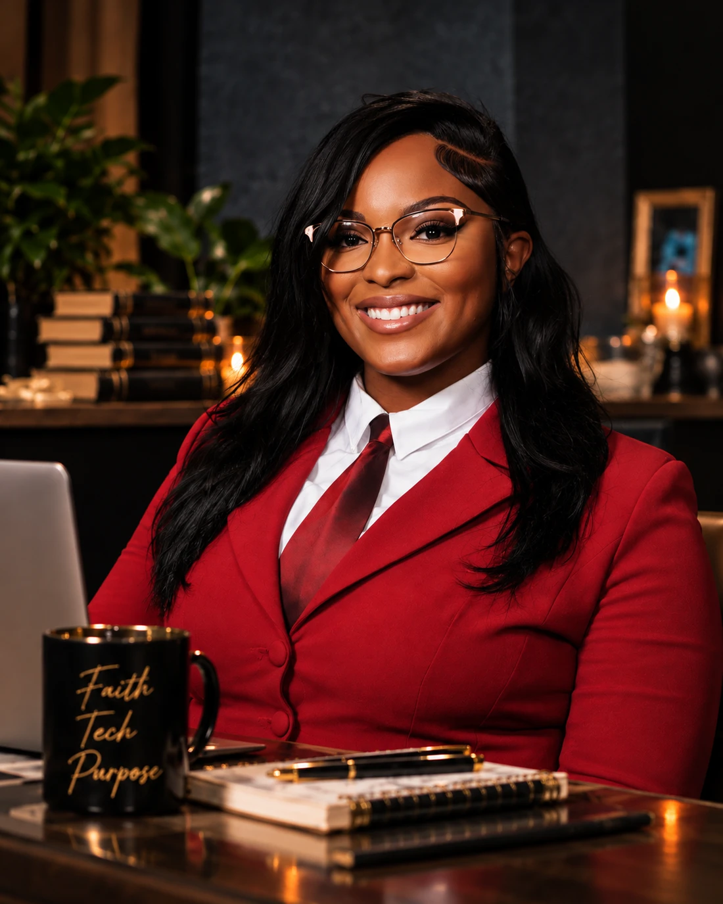

About me
Meet Dee.
Hi, I’m Deniqua. You can call me Dee.
I’m a cybersecurity professional, a mother of twins, and a lifelong learner whose journey into tech has been anything but traditional. My background spans operations, networking, and cybersecurity. After earning my bachelor’s degree in Cybersecurity and Information Assurance, I officially broke into the field I worked so hard to be a part of.
I created Dee’s Cyber Corner to be my own little space on the internet. A place where I can document my journey, share what I’m learning, celebrate my growth, and hopefully make the road a little easier for someone coming behind me.
Here you’ll find my cybersecurity projects and labs, resources that helped me along the way, lessons from my own experience breaking into the field, and blogs about tech and whatever I’m currently learning.
Outside of cybersecurity, I’m big on faith, growth, giving back, and finding new things that spark my curiosity. I’m usually spending time with my twins or discovering a new hobby. Right now, I’m fixated on LEGO and book nooks. Ask me again next week and it might be something completely different.
My journey hasn’t always been smooth, but I’m here. I’m learning, growing, and soaking up every opportunity in front of me. If sharing my journey helps even one person believe you can do it too, then this little corner has done exactly what I created it to do.
Learning. Building. Sharing. Growing.
Let’s connect
Get to know my work and explore my corner.